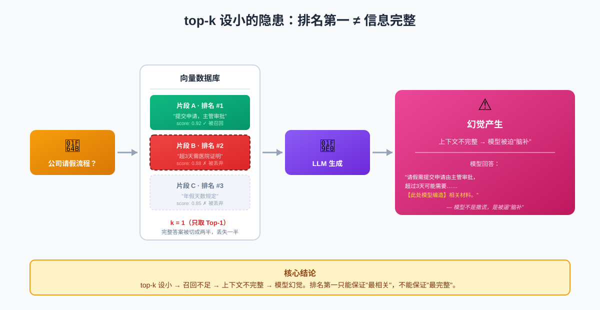
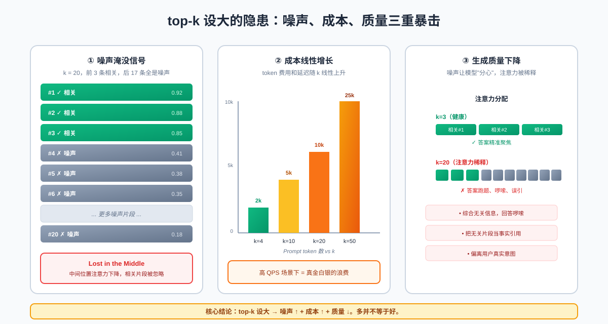
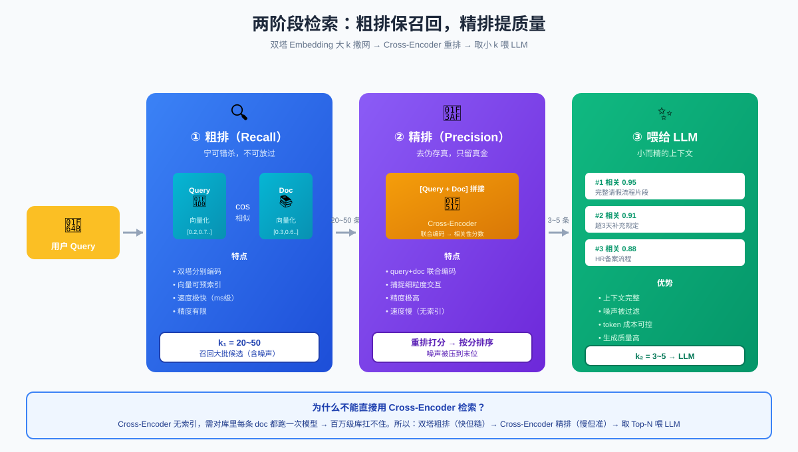
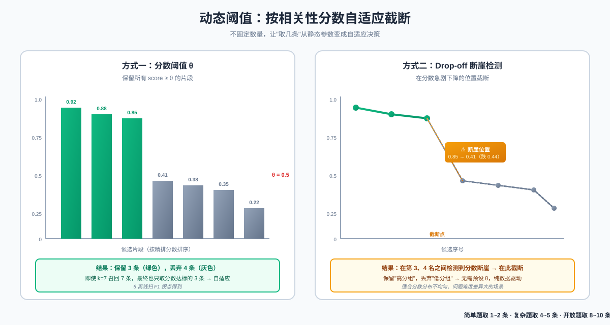
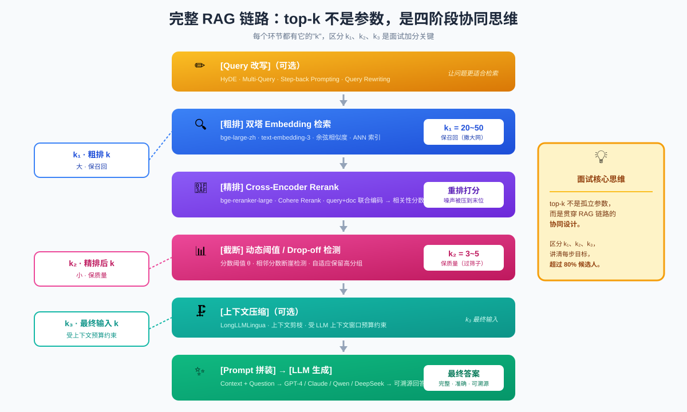

经典面试题：RAG 检索 top-k 到底怎么设？
面试官问：“你们 RAG 系统的 top-k 是怎么设的？” 你如果只回答一句"看情况"，那基本就和 offer 说再见了。top-k 这个看似简单的参数，背后考的是你对完整 RAG 链路的理解深度。本文参考「小哲讲 agent 面试」的拆解思路，把这个高频面试题一次讲透。
一、为什么 top-k 是必考题？
在 RAG（Retrieval-Augmented Generation）系统中，top-k 决定从向量数据库里召回多少条文档片段喂给大模型。它看起来只是 search_kwargs={"k": 4} 这么一个参数，但它同时牵动四件事：
| 维度 | top-k 的影响 |
|---|---|
| 召回率（Recall） | k 太小 → 漏掉真正相关的片段 |
| 噪声（Noise） | k 太大 → 召回一堆无关片段干扰生成 |
| 成本（Cost） | k 越大 → Prompt 越长 → token 费用越高、延迟越高 |
| 生成质量（Quality） | 噪声片段会让 LLM “迷失在中间”，答非所问 |
也就是说，top-k 是召回、噪声、成本、质量四个目标的交汇点。面试官真正想听的不是"我设成了 5"，而是"我为什么这样设，背后是什么链路思维"。
二、top-k 设小了：幻觉的温床

top-k 设小的隐患：排名第一的片段可能不完整很多人凭直觉认为"检索结果越靠前越相关，取 Top-1 不就行了？"——这是第一个坑。
问题在于：排名第一 ≠ 信息完整。
举个真实场景：用户问"公司请假流程是什么？"，向量库里有一份《员工手册》第 3 章详细写了请假流程，但因为切分（chunking）策略，这段内容被切成两半：
- 片段 A（排名第 1）："……请假需提前在 OA 系统提交申请，由直属主管审批。"
- 片段 B（排名第 2）：“超过 3 天的请假需提供医院证明，并报 HR 备案。”
如果你只取 Top-1，LLM 拿到的上下文只有"提交申请 + 主管审批"这一半，它大概率会编造“3 天以上需要什么材料”——因为用户问到了，它必须给出回答，但又没看到完整信息。这就是典型的幻觉：模型不是在撒谎，而是被不完整的上下文逼着"脑补"。
核心结论：top-k 设小的代价是召回不足 → 上下文不完整 → 模型幻觉。排名第一只能保证"最相关"，不能保证"最完整"。
三、top-k 设大了：噪声与成本的双重暴击

top-k 设大的隐患：噪声片段淹没真正答案那干脆设大点，k=20、k=50 总不会漏了吧？这是第二个坑。
k 太大会引入三类问题：
3.1 噪声淹没信号
向量检索本质是相似度排序，但"相似"不等于"相关"。当 k=20 时，后 10 条往往是"看起来有点像但其实没用"的片段。这些噪声片段进入 Prompt 后，会触发 LLM 的 “Lost in the Middle” 现象——模型对上下文中间位置的信息注意力会下降，反而把真正相关的片段忽略了。
3.2 成本线性增长
LLM 的推理成本是按 token 计费的，k 越大，Prompt 越长：
- k=4：上下文约 2000 token
- k=20：上下文约 10000 token
成本直接 5 倍，延迟也跟着涨。线上高 QPS 场景下，这是真金白银的浪费。
3.3 生成质量下降
更隐蔽的问题是：噪声片段会让模型"分心"。LLM 是基于注意力机制的，当 Prompt 里混入大量无关内容，模型会尝试"综合"这些信息，导致回答跑题、啰嗦，甚至把无关片段当事实引用。
核心结论：top-k 设大的代价是噪声增加 → 成本上升 → 生成质量反而下降。多并不等于好。
四、两阶段检索：粗排 + 精排

两阶段检索：粗排保召回，精排提质量既然 k 设小了漏、设大了吵，那有没有两全其美的办法？这就是**两阶段检索（Two-Stage Retrieval）**的价值。
4.1 第一阶段：粗排（Recall）——宁可错杀，不可放过
- 用什么：双塔 Embedding 模型（如
bge-large-zh、text-embedding-3） - 怎么做：query 和 doc 分别编码，算余弦相似度
- k 设多大：放宽到 20~50，甚至 100
- 目标：高召回率，把可能相关的片段都捞进来，哪怕混入噪声
这一步本质是"撒大网"，速度快（向量检索毫秒级），但精度有限。
4.2 第二阶段：精排（Precision）——去伪存真
- 用什么：Cross-Encoder 重排模型（如
bge-reranker-large、Cohere Rerank） - 怎么做：把 query 和每一条候选 doc 拼在一起送进模型，输出相关性分数
- 取多少：按分数从高到低取 3~5 条 喂给 LLM
- 目标：高精度，把粗排里的噪声过滤掉，只留真正相关的
这一步是"过筛子"，精度高（Cross-Encoder 能捕捉 query-doc 的细粒度交互），但速度慢，所以只对粗排的少量候选做。
4.3 为什么不能直接用 Cross-Encoder 检索？
因为 Cross-Encoder 没有"索引"概念，必须对库里每条 doc 都跑一次模型，百万级文档库根本扛不住。所以工业界的标准做法就是：
双塔粗排（快但糙）→ Cross-Encoder 精排（慢但准）→ 取 Top-N 喂 LLM
这正是 top-k 在两阶段里的"分工"——粗排的 k 大（保召回），精排后的 k 小（保质量）。面试时把这两个 k 区分开讲，就已经超过 80% 的候选人了。
五、动态阈值：让输入规模自适应

动态阈值：按相关性分数自适应截断两阶段检索解决了"召回 vs 精度"的矛盾，但还有一个问题：精排后取几条？固定取 3 条还是 5 条？
固定数字依然不够好，因为不同问题的"答案密度"不一样：
- 简单事实题（“公司全称是什么”）：可能只有 1 条强相关，取 5 条全是噪声
- 复杂流程题（“请假流程”）：可能需要 4~5 条片段拼起来才完整
- 开放性问题（“总结公司福利”）：可能需要 8~10 条覆盖不同福利项
这就引出动态阈值（Dynamic Threshold）：
5.1 基于分数的截断
不固定数量，而是设一个相关性分数阈值 θ：
|
|
比如精排分数分布是 [0.92, 0.88, 0.85, 0.41, 0.38, ...]，阈值设 0.5，那就只取前 3 条，后边的低分噪声自动丢弃。
5.2 基于分数差距的截断（Drop-off 检测）
观察相邻分数的"断崖"：
|
|
在分数急剧下降的位置截断，能自适应地保留"高分组"而丢弃"低分组"。
5.3 加上上下文长度约束
当然，动态阈值还要和 LLM 的上下文窗口配合——总不能召回 50 条全塞进去。实际工程里通常是：
|
|
核心结论：动态阈值让"取几条"从静态参数变成自适应决策，这是 top-k 的高阶玩法，也是面试加分项。
六、完整链路：top-k 不是参数，是思维

完整 RAG 链路思维：top-k 是四阶段的协同把前面几节串起来，你会看到 top-k 背后其实是一条完整的链路：
|
|
每个环节都有它的"k"：
- k₁（粗排）：大，保召回
- k₂（精排后）：小，保质量
- k₃（最终输入）：受动态阈值和上下文预算双重约束
面试官听到你能区分 k₁、k₂、k₃，并解释清楚每一步的目标，基本就认定你真正做过 RAG 工程，而不是只会调 LangChain 的 search_kwargs={"k": 4}。
七、面试高分回答模板
如果被问到"top-k 怎么设"，可以这样组织回答（约 90 秒）：
第一层：先承认 trade-off（10 秒）
“top-k 不是孤立参数，它同时影响召回率、噪声、成本和生成质量，设小了会漏、设大了会吵，所以不能一刀切。”
第二层：讲两阶段检索（40 秒）
“我们的做法是两阶段检索。粗排用双塔 Embedding，k 设到 20~50，优先保召回；精排用 Cross-Encoder Rerank，比如
bge-reranker-large，对粗排结果重打分。Cross-Encoder 精度高但慢，所以只对少量候选做。”
第三层：讲动态阈值（25 秒）
“精排后不固定取几条，而是用动态阈值——设一个相关性分数下限，或者检测分数 drop-off 的断崖位置，自适应截断。再叠加 LLM 上下文长度预算做上限保护。”
第四层：回到本质（15 秒）
“本质上 top-k 考的不是调参，而是对 RAG 链路的理解——召回、排序、截断、生成，每个阶段都有它的 k。区分清楚 k₁、k₂、k₃，效果就稳了。”
八、常见追问与应对
| 面试官追问 | 参考回答要点 |
|---|---|
| “粗排 k 设 50 不会太慢吗？” | 向量检索是 ANN（近似最近邻），百万级库毫秒级，HNSW/IVF 索引加持下没问题 |
| “Rerank 模型怎么选？” | 中文用 bge-reranker-large，英文用 Cohere Rerank；轻量场景可用 bge-reranker-base |
| “动态阈值怎么调？” | 离线评估集上扫阈值，看 Recall@k 和 Precision@k 的 F1 拐点；或用分数分布的肘部 |
| “为什么不直接用长上下文模型塞进去？” | 长上下文有 Lost-in-the-Middle、成本高、不可溯源三个问题，RAG 仍然是更经济的方案 |
| “k 设大了模型答非所问怎么办？” | 先加 Rerank，再加动态阈值；必要时上 LongLLMLingua 做上下文压缩 |
| “如何评估 top-k 设得对不对？” | 用 Ragas / TruLens 做 Faithfulness、Context Recall、Answer Relevancy 三项指标评估 |
总结
回到那个面试题——“RAG 检索的 top-k 怎么设？”
低分回答：“看情况，一般设 3~5。”
及格回答：“设小了会幻觉，设大了会引入噪声，所以要在召回和精度之间权衡。”
高分回答：
top-k 不是单一参数，而是贯穿 RAG 链路的协同设计。粗排用双塔 Embedding 大 k 保召回（20~50），精排用 Cross-Encoder 重排提精度，再用动态阈值自适应截断到 3~5 条，最后受 LLM 上下文预算约束。本质考的不是调参，而是对召回 → 排序 → 截断 → 生成整条链路的理解。
记住视频里那句点睛之笔：
“top-k 的本质是完整 RAG 链路思维，而非调参数。”
把这句话在面试里讲出来，配合上面的链路图，这道题基本就稳了。
本文参考抖音「小哲讲 agent 面试」的视频内容整理扩展，原视频链接见文末。封面图由作者自行添加。